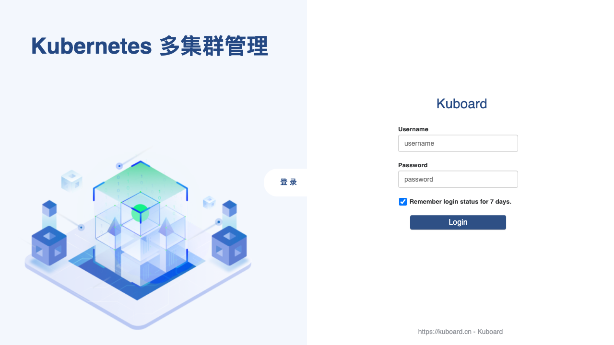
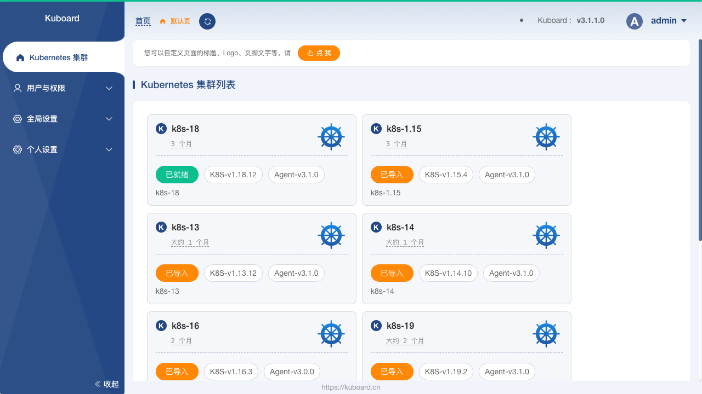
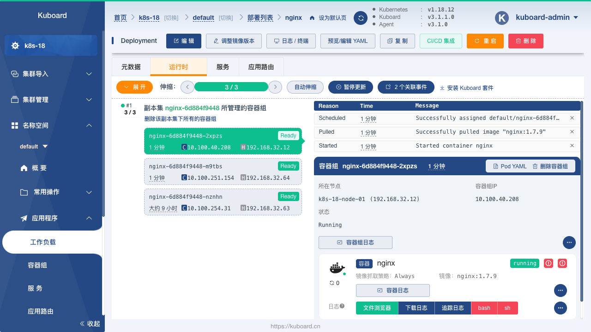
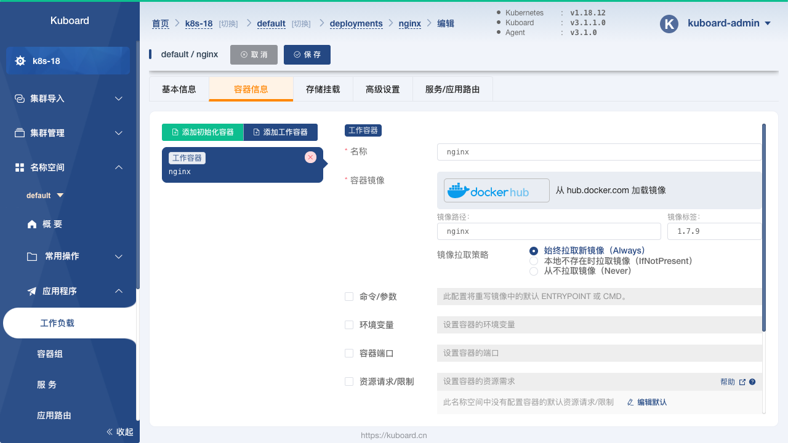
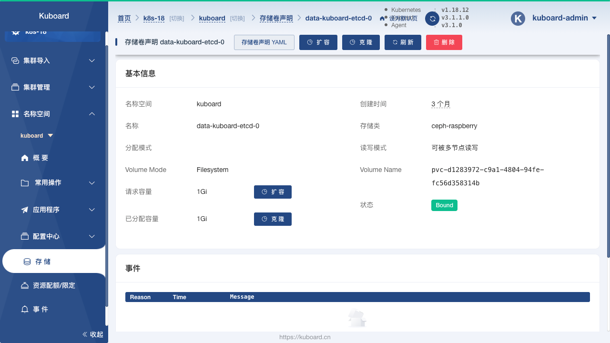
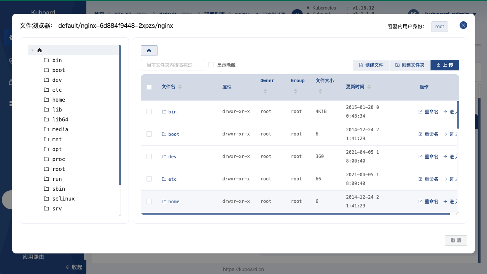
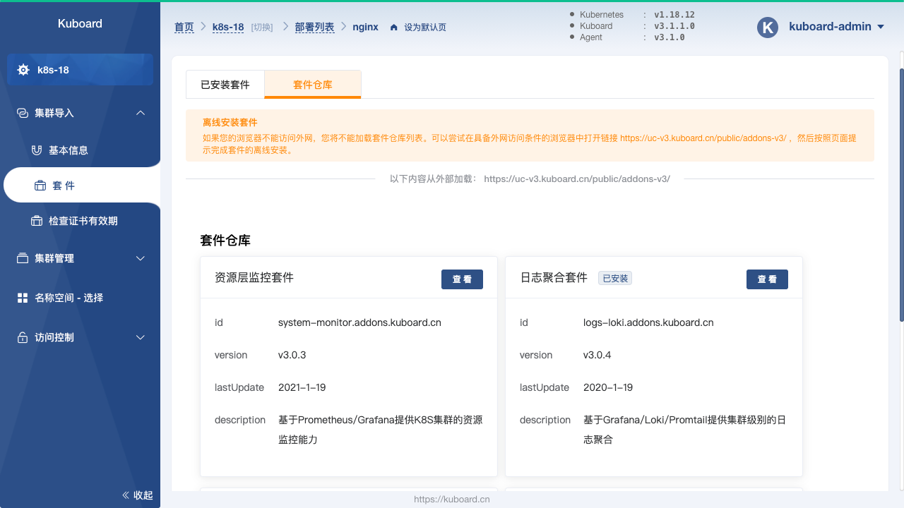
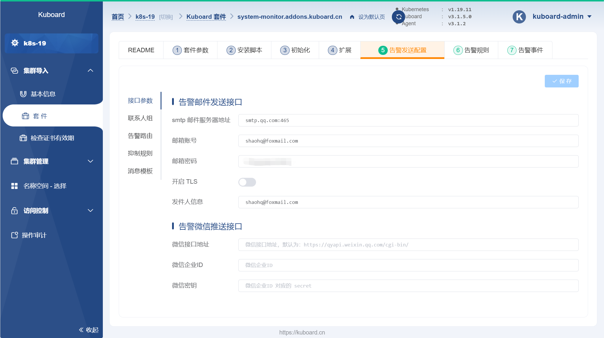
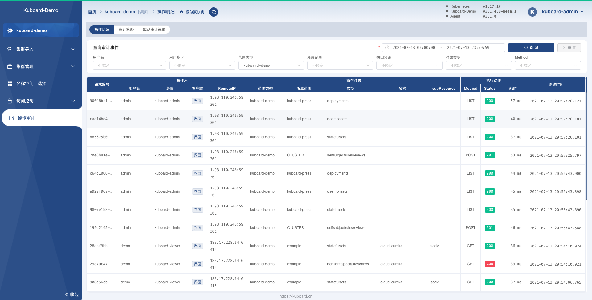

Kuboard
 项目首页
项目首页
免费的 Kubernetes 图形化管理工具，帮助用户快速在 Kubernetes 上落地微服务。









 如何部署在线 Kuboard
如何部署在线 Kuboard
什么是 Kuboard
- Kuboard 是一款面向开发者的、用于搭建和管理 Kubernetes 集群的工具。它本质上是一个简化工具，帮助用户快速部署、维护和管理 Kubernetes 集群，而无需进行过多的手动操作。
功能列表
- 简化 Kubernetes 部署： Kuboard 自动化了 Kubernetes 集群的许多步骤，让创建、配置和管理 Kubernetes 集群变得更容易。 用户只需选择所需类型，Kuboard 就能够处理大部分配置和安装细节。
- 友好的界面： Kuboard 提供了一个直观易用的用户界面，使得用户能够轻松地操作 Kubernetes 集群中的对象，比如 Pod、Deployment 和 Service 等。 界面往往比命令行更加便捷直观。
- 本地集群管理：除了在云平台上使用，Kuboard 也可以用于本地 Kubernetes 集群的管理。
- 各种 Kubernetes 工具的整合：它可以整合其他 Kubernetes 工具和资源，让用户方便使用这些工具。
- 其它功能：包含其他的功能，如配置管理、用户授权以及特定的集群管理工具集成等。